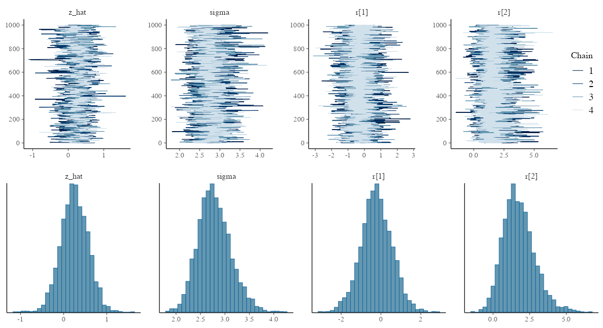
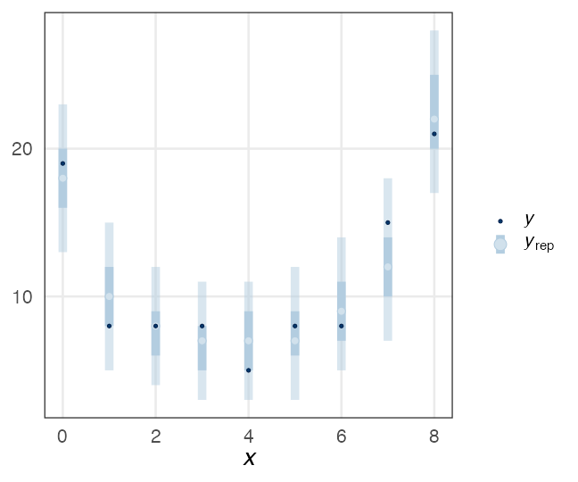

統計モデリング概論 DSHC 2024
東北大学 生命科学研究科 進化ゲノミクス分野 特任助教
(Graduate School of Life Sciences, Tohoku University)
(Graduate School of Life Sciences, Tohoku University)
- 導入
- 直線回帰、確率分布、擬似乱数生成
- 尤度、最尤推定
- 一般化線形モデル(GLM)
- 個体差、一般化線形混合モデル(GLMM)
- ベイズの定理、事後分布、MCMC
- StanでGLM
- 階層ベイズモデル(HBM)
2024-08-28 東京海上 Data Science Hill Climb
https://heavywatal.github.io/slides/tokiomarine2024/
https://heavywatal.github.io/slides/tokiomarine2024/
ちょっとずつ線形モデルを発展させていく

久保先生の"緑本"こと
「データ解析のための統計モデリング入門」
をベースに回帰分析の概要を紹介。
線形モデル LM (単純な直線あてはめ)
↓ いろんな確率分布を扱いたい
一般化線形モデル GLM
↓ 個体差などの変量効果を扱いたい
一般化線形混合モデル GLMM
↓ もっと自由なモデリングを！
階層ベイズモデル HBM
GLMMで登場した個体差を階層ベイズモデルで
植物100個体から8個ずつ種子を取って植えたら全体で半分ちょい発芽。
親1個体あたりの生存数はn=8の二項分布になるはずだけど、
極端な値(全部死亡、全部生存)が多かった。個体差？
個体差をモデルに組み込みたい
各個体の生存率$p_i$が能力値$z_i$のシグモイド関数で決まると仮定。
その能力値は全個体共通の正規分布に従うと仮定:
$z_i \sim \mathcal{N}(\hat z, \sigma)$
パラメータ2つで済む: 平均 $\hat z$, ばらつき $\sigma$ 。
個体能力のばらつき $\sigma$ が大きいと両端が増える
普通の二項分布は個体差無し $\sigma = 0$ を仮定してるのと同じ。
階層ベイズモデルのイメージ図
事前分布のパラメータに、さらに事前分布を設定するので階層ベイズ

さっきの図をStan言語で記述すると
10 とか 3 とか、エイヤっと決めてるやつが超パラメータ。
data {
int<lower=0> N;
array[N] int<lower=0> y;
}
parameters {
real z_hat; // mean ability
real<lower=0> sigma; // sd of r
vector[N] r; // individual difference
}
transformed parameters {
vector[N] z = z_hat + r;
vector[N] p = inv_logit(z);
}
model {
y ~ binomial(8, p);
z_hat ~ normal(0, 10);
r ~ normal(0, sigma);
sigma ~ student_t(3, 0, 1);
}
generated quantities {
array[N] int yrep = binomial_rng(8, p);
}
変量効果が入った推定結果
seeds_data = list(y = df_seeds_od$y, N = sample_size)
model = cmdstanr::cmdstan_model("stan/glmm.stan")
fit = model$sample(data = seeds_data, seed = 19937L, step_size = 0.1, refresh = 0)
draws = fit$draws(c("z_hat", "sigma", "r[1]", "r[2]"))
variable mean median sd mad q5 q95 rhat ess_bulk ess_tail
lp__ -455.99 -455.73 9.15 9.30 -471.48 -441.28 1.01 770 1864
z_hat 0.25 0.25 0.31 0.31 -0.27 0.75 1.02 601 1259
sigma 2.79 2.76 0.34 0.33 2.28 3.37 1.01 1014 2216
r[1] -0.22 -0.24 0.77 0.75 -1.49 1.06 1.00 2887 2615
r[2] 1.76 1.68 1.07 1.03 0.20 3.66 1.00 3617 2728
r[3] 1.74 1.66 1.03 0.98 0.19 3.60 1.00 3851 2798
r[4] -3.70 -3.50 1.57 1.46 -6.68 -1.50 1.00 4494 2140
r[5] -2.22 -2.14 1.07 1.02 -4.10 -0.60 1.00 3435 2670
r[6] -2.22 -2.12 1.08 1.02 -4.21 -0.63 1.00 3689 2149
r[7] 0.93 0.90 0.88 0.84 -0.46 2.44 1.00 3689 2411
# showing 10 of 403 rows (change via 'max_rows' argument or 'cmdstanr_max_rows' option)
抜粋して作図。悪くない。
データ生成の真のパラメータ値は $\hat z = 0.5,~\sigma = 3.0$ だった。

🔰 階層ベイズモデルの練習問題: 種の数
8-hbm.ipynb
をJupyterで開き、スライド説明に沿って実行していこう。
100個体の植物から8つずつ種を取り、発芽した数を観察。
🔰 階層ベイズモデルの練習問題: ビール注文数
sample_size = 300L
lambda = 3
overdisp = 4
.n = lambda / (overdisp - 1)
.p = 1 / overdisp
df_beer_od = tibble::tibble(
X = rnbinom(sample_size, size = .n, prob = .p)
)

ベイズ推定まとめ
- 条件付き確率 $\Pr(B \mid A)$ の理解が大事。
- 事後分布 $\propto$ 尤度 ⨉ 事前分布
- 確信度合いをデータで更新していく。
- 推定結果は分布そのもの。
- そこから点推定も区間推定も可能。
- 解析的に解けない問題は計算機に乱数を振らせて解く。
- MCMCサンプル $\sim$ 解きにくい事後分布
- 理論・技術の進歩が目覚ましい。
回帰分析ふりかえり
より柔軟にモデルを記述できるようになった。計算方法も変化。

全体まとめ
- 統計とは、データをうまくまとめ、それに基づいて推論するための手法。
- モデルには理解志向と応用志向があり、統計モデルは前者寄り。
- どちらも多少は分かった上で使い分けたい。
- どっちにしろ真の正しい何かではない。
- 確率分布とその背後にある確率過程の理解が重要。
- 乱数生成→作図を繰り返してイメージを掴もう。
- MCMCサンプリングも事後分布からの乱数生成。
- 本講義で「統計モデリングを完全に理解した」とは言えない。
- 理論も実践もほとんど説明していない。
- 本を読む準備ができた、くらいの気持ち？
参考文献
- データ解析のための統計モデリング入門 久保拓弥 2012
- StanとRでベイズ統計モデリング 松浦健太郎 2016
- RとStanではじめる ベイズ統計モデリングによるデータ分析入門 馬場真哉 2019
- データ分析のための数理モデル入門 江崎貴裕 2020
- 分析者のためのデータ解釈学入門 江崎貴裕 2020
- 統計学を哲学する 大塚淳 2020